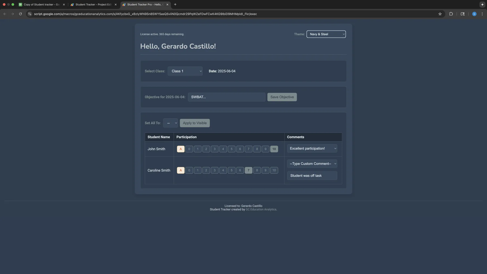
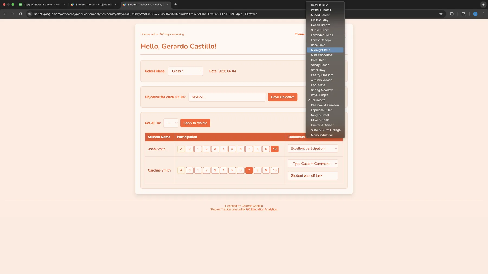
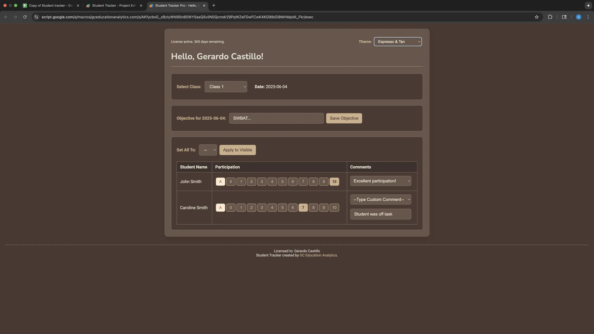
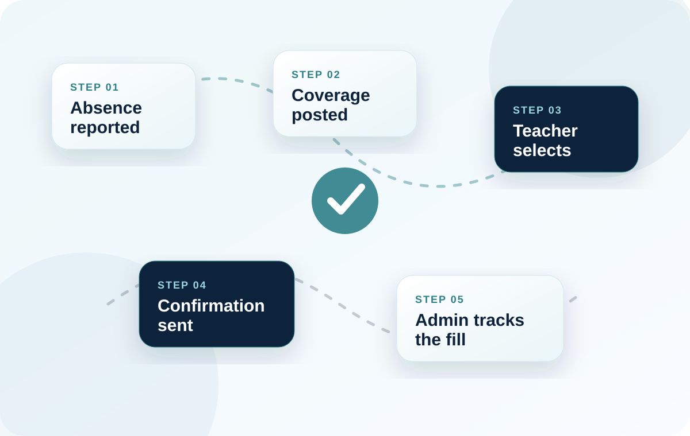
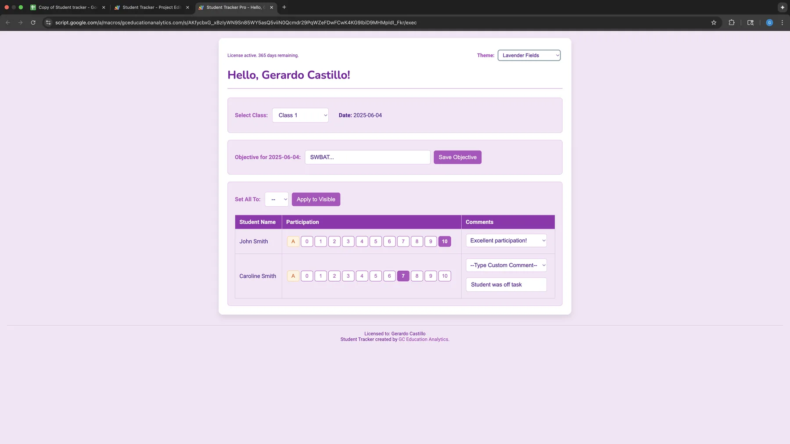
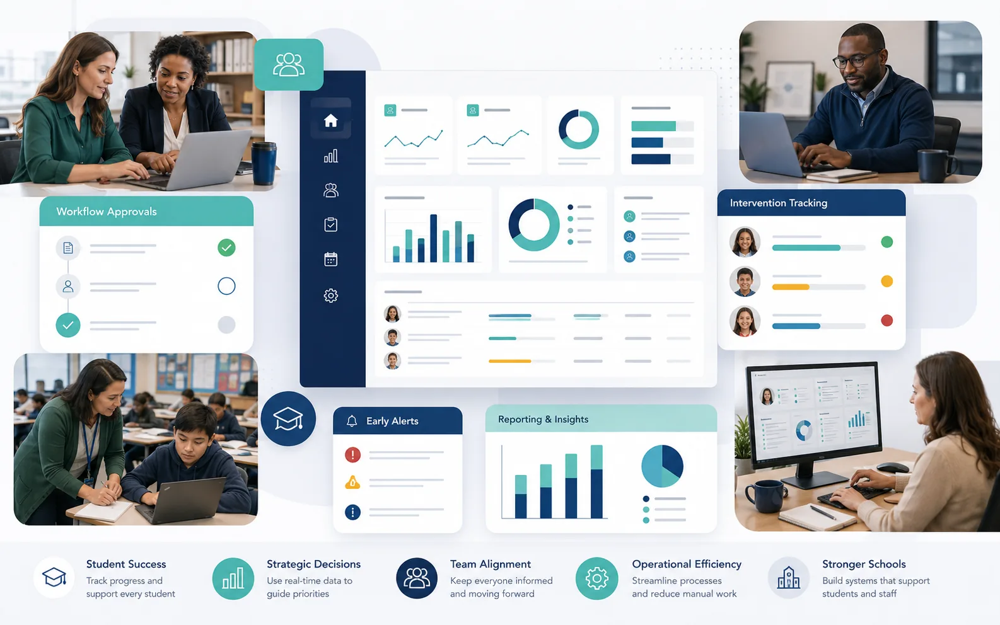

From MTSS hubs to testing center systems, tools are built around the workflow your school actually runs.
Build the school tools your team keeps wishing existed.
GC Education Analytics teaches school administrators to move beyond AI as a chatbot—using it to automate workflows, build internal tools, and turn school data into action. Schools can also commission a done-for-you system.
Analyze state testing, MTSS, at-risk, cohort, demographic, and predictive data with school decisions in mind.
Help principals, APs, and district leaders map, build, and test useful tools with guided support.
Keep a strong focus on school-controlled environments and FERPA-aware implementation.
Sample Build
Built systems can be simple, clear, and ready for daily school use.
These screens show the level of polish GC Education Analytics brings to custom school software, whether the need is an MTSS hub, a testing center system, a workflow tracker, or another internal tool your campus needs.
- At-risk and MTSS hubs
- Eligibility, graduation, and discipline trackers
- Testing center, sub, payroll, and signature workflows
- Google Workspace-based internal apps staff can actually use



See what this work can look like in practice.
Screenshots, workflow visuals, and interface examples help schools picture how custom software and analytics could work in their own setting.

Coverage workflow automation
A look at how an internal school process can move out of email and into a trackable system.

School-facing app interfaces
Internal tools should be simple enough for daily use and polished enough that staff trust them quickly.

Custom builds where vendors do not fit
For niche school workflows, a school-specific app can be more useful than a generic platform.
School data analysis should help you identify students, patterns, and next steps faster.
The analysis centers on the questions schools actually ask: which students are moving toward Tier 2 or Tier 3, where subgroup gaps are widening, what state testing trends are showing, and which interventions appear to be helping.
State testing and longitudinal analysis
Track how students, grade levels, campuses, or programs change over time using state assessment and year-over-year performance data.
Cohort and demographic analysis
Compare cohorts and student groups to see where performance patterns persist, improve, or break in different ways.
Predictive and regression analysis
Look at which factors appear most tied to attendance, achievement, behavior, course failure, or graduation risk.
MTSS and at-risk analysis
Use grades, attendance, behavior, intervention, and assessment data together to flag students who may need Tier 2 or Tier 3 support.
Leadership-ready interpretation
Turn the analysis into decisions about intervention groups, staffing, student support, accountability, and next instructional steps.
Move beyond AI as a chatbot. Build something your school can use.
Conference sessions introduce the possibilities. Half-day and full-day workshops slow the process down so principals, district leaders, and admin teams can map a workflow, build alongside the presenter, test a prototype, and leave with a responsible next step.
Who It Helps
Built for school and district leaders.
- Principals and assistant principals
- District leaders and campus admin teams
- Counselors, intervention leads, and operations staff
- MTSS, curriculum, data, and operations teams
What They Learn
Focus on workflows staff can use right away.
- How to describe a school workflow clearly enough for AI to help
- How to use prompts and Apps Script to build useful internal tools
- How to automate repetitive admin work inside Google Workspace
- How to test access, edge cases, and usability before rollout
OKMTSS Attendee Feedback
Practical enough to use immediately.
Attendees described the sessions as knowledgeable, patient, useful, and easy to apply—and repeatedly asked for more time to practice.
“This was by far the best presentation at the conference. It taught me highly valuable skills that I can use to make my workflow and data tracking seamless and easily accessible.”
“I could have just gone to his presentation and would have walked away with more than I could ask for. He was so knowledgeable, and I am already using what he presented.”
“I enjoyed your first presentation so much on Thursday, I was excited to also attend this one. You helped me have a better understanding of AI overall and how to use it.”
The conference name identifies where feedback was collected and does not imply organizational endorsement.
Grounded in real school work, not hypothetical examples.
The tools and training on this site come from real educator experience: more than 13 internal programs and workflows built inside Mustang Public Schools, plus AI training that helped a Texas assistant principal build a custom dashboard that now saves hours every week.
School Context
Built inside Mustang High School
The work is informed by systems built inside Mustang Public Schools, including Mustang High School, a roughly 3,700-student campus and one of Oklahoma's largest high schools.
Representative Tools
More than 13 internal programs and workflows.
- At-risk and MTSS hubs
- Eligibility, discipline, graduation, and testing tools
- Walkthrough, payroll, digital signature, and operations workflows
The AI training helped a Texas assistant principal build a custom dashboard that now saves hours every week.
The goal is for administrators to build tools that are genuinely useful in their own campus or district context. Assistant principal, Texas
Gerardo Castillo, founder of GC Education Analytics LLC.
Founder-Led
Built by someone who understands schools from the inside.
GC Education Analytics is led by Gerardo Castillo, an educator who has built more than 13 internal programs and workflows inside Mustang Public Schools and works across data analysis, Google Workspace automation, Apps Script, and custom product building.
The approach is simple: create tools that respect educators' time, make data more usable, and help schools operate with more clarity and less friction. That means fewer black-box systems and more workflows your team can actually understand and use.
Start with a free consultation.
We can talk through the system you need built, the question you need answered, or the kind of AI training your administrators would benefit from most.